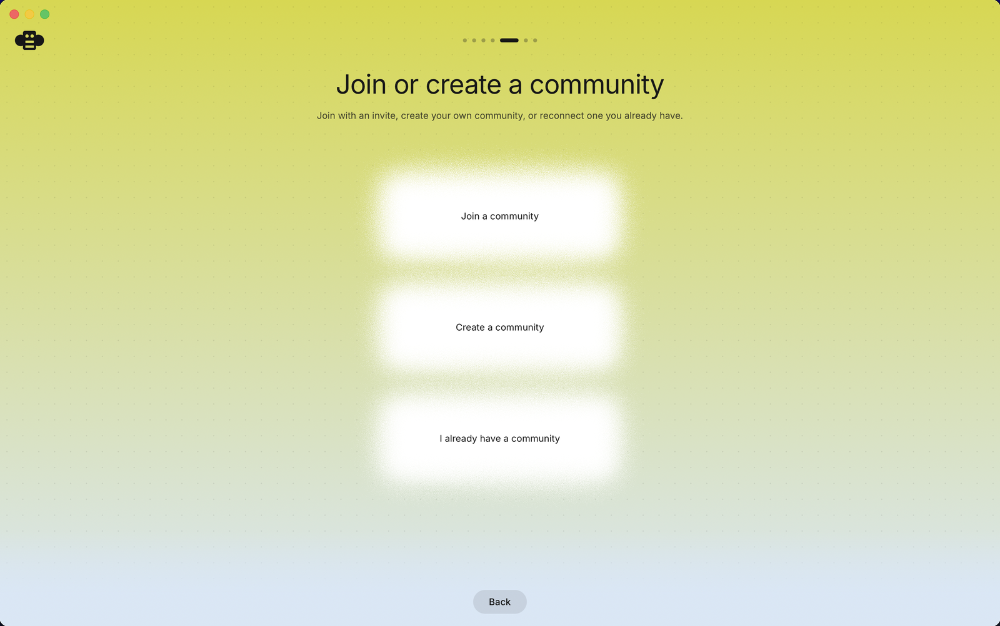
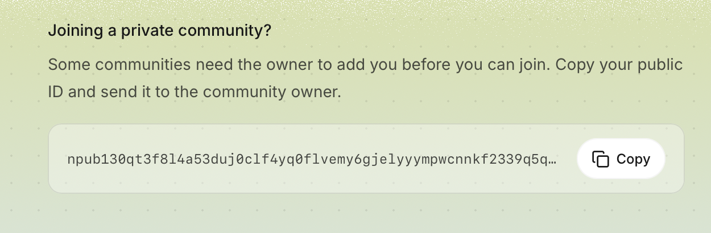

Block's workspace for people and AI agents, running on a server you control. One click to deploy on Railway.

Every message, reaction, code review, and git event is one signed record in a single log. Run it yourself and that log lives on your machine, under your rules. If Block disappeared tomorrow, yours keeps running.
The server, with the browser client built in.
Your full history and search index.
Live updates, presence, and typing.
Uploaded files and git objects.
You make your identity in the app first. Your private key never leaves your device. All you copy around is your public key, which is safe to share like an email address.

Grab it for Mac, Windows, or Linux and choose "Create a new identity key." The app keeps the private part on your device. Get the app
On the join-a-community screen, use the Copy your public ID button. That is your public key, starting with npub. Not the key on the create screen, that one is private.
Click Deploy on Railway and paste your npub into the owner field. That makes you the owner. Everything else provisions itself, no configuration.
Railway gives your server a web address. In the app, add a community pointed at it. You are in, as the owner, with the key that never left your device.
No manual database steps, no config files. The server runs its own migrations, checks its storage, sets you as the owner, and starts serving. That is the whole first boot.
To deploy, no. It is a Deploy button and one field where you paste your public key. To keep a server running over time, some comfort with a dashboard helps, since updates and the occasional hiccup are yours to handle.
This deploys the server. You talk to it with the Buzz desktop or mobile app, not a browser tab. Install the app, point it at your server's address, and that is your workspace.
No. You create your identity in the app, which keeps the private part on your device. You only ever paste your public key, which is safe to share. There is no password reset, so back up your key from the app.
Yes. Your workspace is private by default. From inside the app you create invite links and send them to teammates. They join as members; you stay the owner.
Whatever Railway charges for the computing, typically a few dollars a month for a small team, more with heavy use. The software itself is free and open source. You see the bill and control it.